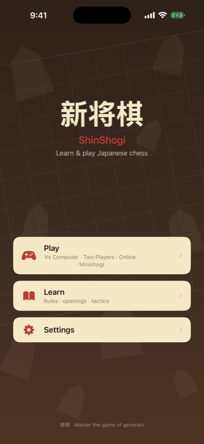

将棋 · Japanese Chess
Play smarter. Learn faster. Master shogi.
ShinShogi pairs a real Japanese-chess engine with a coach that catches your blunders, an opening tree you can actually explore, and tactics that come back until they stick. Free to play, no account required.
Available now on the App Store · iPhone & iPad

Why ShinShogi
A teacher, not just a board
Most shogi apps stop at legal moves. ShinShogi actively helps you get better, every game you play.
A coach in your pocket
Coach mode flags likely blunders in real time with a one-tap takeback, and Game Analysis turns every finished game into puzzles made from your own mistakes.
Named AI rivals
An aggressive ranging-rook attacker, a defensive castle-builder, and more — each with its own personality, from gentle beginner to master.
Minishogi, when you want fast
A 5×5 variant with no knights or lances and a single-rank promotion zone — sharp, complete games in a fraction of the time.
ShinShogi Pro — pay once, unlock forever
A single one-time purchase, not a subscription. No recurring charges, ever.
A closer look
Ten real screens from the app — swipe through to see it in action.
Home
Everything you need to improve
Built for players who want to actually get better, not just move pieces.
Coach Mode
Real-time blunder warnings with a one-tap takeback.
Game Analysis
Finds your blunders and missed mates — and turns them into puzzles.
Opening Explorer
Walk a branching tree of openings and see exactly where each line leads.
Spaced-Repetition Review
Tsume you get wrong resurface, Anki-style, until they stick.
KIF Import & Export
Study original annotated games, or import and share your own via .kif.
Online Play
Turn-based matches over Game Center — no account needed beyond that.
Light & Dark Theme
Choose Light, Dark, or follow the system — designed for both.
Full Accessibility
Complete VoiceOver support across the board, hands, and controls.
Built for how people actually improve
Real sticking points shogi players run into — and what ShinShogi does about each one.
"I keep making the same mistakes."
Coach Mode catches likely blunders as you play, and Game Analysis reviews finished games for what you missed — including forced mates you walked past.
Coach + Analysis"Openings feel like pure memorization."
The Opening Explorer lets you walk the branches yourself and see where each choice actually leads, instead of drilling a fixed move list.
Opening Explorer"I solve a puzzle once and forget it."
Missed tactics come back on a schedule — solved ones get spaced further out, missed ones resurface sooner, so the patterns actually stick.
Spaced RepetitionQuestions
The short version — full details live on the support page.
Is ShinShogi free?
Yes. The full game, computer opponents, learning tools, and tactics are free. ShinShogi Pro is an optional one-time unlock — not a subscription — for Minishogi, extra board themes, and the full tactics/drills library.
Do I need an account?
No. ShinShogi works fully offline with no sign-in. Online turn-based play uses Apple's Game Center, which handles your identity — ShinShogi never collects it.
What devices will it support?
iPhone and iPad, with layouts tuned for both, plus full VoiceOver accessibility.
Where can I download it?
ShinShogi is available now on the App Store, for iPhone and iPad.
More questions? Visit Support & Privacy.
Available now
Ready to play?
ShinShogi is live on the App Store — free to play, with an optional one-time Pro unlock for Minishogi, extra board themes, and the full tactics library.
Download on the App Store